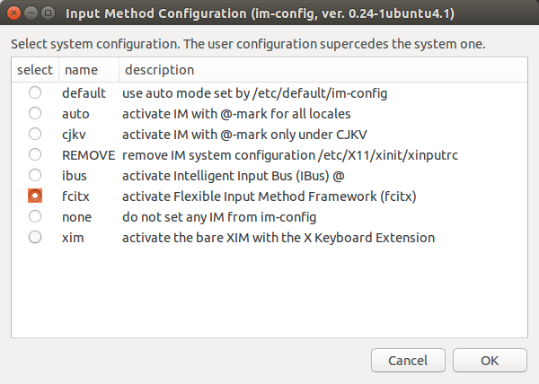
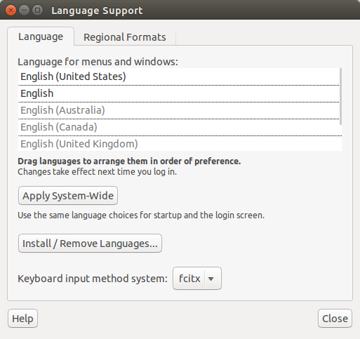
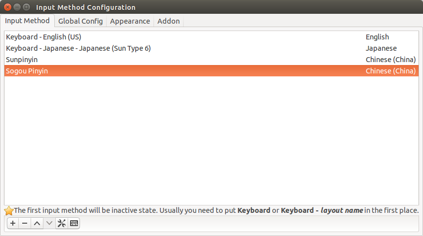
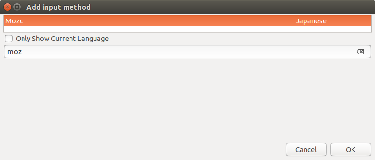
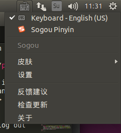

Posted on August 26, 2016, Pageviews : - | Chinese Input, Ubuntu Input Setup,
I have been struggling with Chinese input method in Ubuntu OS for such a looong time. Every time I configure a new Ubuntu desktop, I kinda face the same problem that no matter what I do, I just CANNOT susccessfully install Chinese input method.
After all these strugglings, I finally figure out a way to set the Chinese input method up, which I call it the Ultimate way. The steps are as followed. The version of Ubuntu I am using is 14.04, which is a popular version.
Step 1: Install fcitx correctly
Fcitx is a input framework that provides language support for Linux, find out more on wiki. Some Ubuntu desktops set the system input method to IBus defaultly. Therefore, the first thing we need to do is to install fcitx pakages and change the system from IBus to fcitx.
Open your Terminal and type
sudo apt-get install fcitx fcitx-pinyinYou can also do this by downloading the fcitx packages and install it through Ubuntu Software Center.
Step 2: Set fcitx system-wide
Then set the system to fcitx by typing the following line into your Terminal. Remember to type sudo, otherwise it won't be a system-wide setting.
sudo im-configKeep click OK and Yes on the popped dialog until the Input Method Configuration page is reached. Select fcitx as system configuration. See the following figure.
Now, open System Settings and select Language Support, you shall see fcitx on the bottom, as shown in the follwing figure.
Step 3: Install Chinese/Japanese input
Now your fcitx is working, it's time to install some input methods of your favorite.
For Chinese inputs, I would recommand Sogou Pinyin Input. You will need to download the packages from here. Then double click the file (ends with .deb) which you just downloaded and install it via Software Center. This can also be down by typing the following lines in Terminal.
sudo dpkg -i /path/to/deb/file/filename
sudo apt-get install -f
For Japanese inputs, I heard that mozc is a popular input method, which could be installed by the following commands.
sudo apt-get install fcitx-mozcStep 4: Make it work
Now type the following line in your Terminal. Then log out and re-login.
fcitx-autostartStep 5: Configure the current input method
After re-login, click the little keyboard icon on the upper righ corner of your screen. Select Configure current input method from the list. You shall see the following figure.
Click the plus button + on the bottom. In the popped dialog, uncheck the Only Show Current Language option, and type in your desired input method in the searching entry as shown in the following figure. Remember to type in the Input method name instead of the language name, (e.g. sogou instead of Chinese, moz instead of Japanese).
Step 6: Keep Calm and TYPE WHAT YOU WANT
Now check the little keyboard icon on the upper right corner of your screen, you shall be able to select the desired input method as shown in the following figure. You are now good to go!
 This is all I know so far. If you have any questions, please feel free to email me.